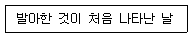
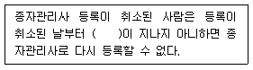
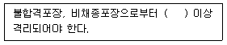
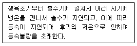

종자산업기사 (2017-08-26 기출문제)
1과목: 종자생산학 및 종자법규
1. 다음 설명에 알맞은 용어는?

- 발아세
- 발아전
- 발아기
- 발아시
(정답률: 85%)

2. 다음 중 발아 최적온도가 가장 낮은 것은?
- 호밀
- 옥수수
- 목화
- 기장
(정답률: 60%)
3. 종자관리요강상 콩의 포장검사에서 특정병에 해당하는 것은?
- 모자이크병
- 세균성점무늬병
- 자주무늬병(자반병)
- 불마름병(엽소병)
(정답률: 79%)
4. ( )에 알맞은 내용은?

- 1년
- 2년
- 3년
- 4년
(정답률: 42%)
5. 종자의 발아과정으로 옳은 것은?
- 수분흡수 → 저장양분 분해효소 생성과 활성화 → 저장양분의 분해·전류 및 재합성 → 배의 생장개시 → 과피(종피)의 파열 → 유묘출현
- 수분흡수 → 저장양분의 분해·전류 및 재합성 → 저장양분 분해효소 생성과 활성화 → 과피(종피)의 파열 → 배의 생장개시 → 유묘출현
- 수분흡수 → 과피(종피)의 파열 → 저장양분의 분해·전류 및 재합성 → 저장양분 분해효소 생성과 활성화 → 배의 생장개시 → 유묘출현
- 수분흡수 → 저장양분 분해효소 생성과 활성화 → 과피(종피)의 파열 → 저장양분의 분해·전류 및 재합성 → 배의 생장개시 → 유묘출현
(정답률: 74%)
6. 농업기술실용화재단에서 실시하는 수입적응성시험 대상작물에 해당하는 것은?
- 메밀
- 배추
- 토마토
- 상추
(정답률: 57%)
7. 정세포 단독으로 분열하여 배를 만들며 달맞이꽃 등에서 일어나는 것은?
- 부정배생식
- 무포자생식
- 웅성단위생식
- 위수정생식
(정답률: 58%)
8. 수분을 측정할 때 고온 항온건조기법을 사용하게 되는 종은?
- 파
- 오이
- 땅콩
- 유채
(정답률: 56%)
9. 다음 중 암발아 종자로만 나열된 것은?
- 수세미, 무
- 베고니아, 명아주
- 갓, 차조기
- 우엉, 담배
(정답률: 44%)
10. 식물학상 과실에서 과실이 내과피에 싸여 있는 것은?
- 옥수수
- 메밀
- 차조기
- 앵두
(정답률: 71%)
11. 파종 시 작물의 복토깊이가 5.0~9.0cm인 것은?
- 가지
- 토마토
- 고추
- 감자
(정답률: 78%)
12. 단명종자로만 나열된 것은?
- 토마토, 가지
- 파, 양파
- 수박, 클로버
- 사탕무, 알팔파
(정답률: 67%)
13. 종자의 외형적 특징 중 난형에 해당하는 것은?
- 고추
- 보리
- 파
- 부추
(정답률: 54%)
14. 품종목록 등재의 유효기간 연장신청은 그 품종목록 등재의 유효기간이 끝나기 전 몇 년 이내에 신청하여야 하는가?
- 1년
- 2년
- 3년
- 4년
(정답률: 74%)
15. 다음 중 작물의 자연교잡률이 가장 높은 것은?
- 수수
- 벼
- 보리
- 아마
(정답률: 45%)
16. 일반적으로 발아촉진 물질이 아닌 것은?
- 지베렐린
- 옥신
- ABA
- 질산칼륨
(정답률: 75%)
17. 거짓이나 그 밖의 부정한 방법으로 종자업 등록을 한 경우에 받는 것은?
- 1개월 이내의 영업 전부 또는 일부 정지
- 3개월 이내의 영업 전부 또는 일부 정지
- 9개월 이내의 영업 전부 또는 일부 정지
- 등록취소
(정답률: 80%)
18. 종자관리요강상 감자 원원종포의 포장격리에 대한 내용이다. ( ) 안에 알맞은 내용은?

- 30m
- 50m
- 100m
- 150m
(정답률: 41%)
19. 보증서를 거짓으로 발급한 종자관리사가 받는 벌칙은?
- 1년 이하의 징역 또는 1천만원 이하의 벌금
- 1년 이하의 징역 또는 3천만원 이하의 벌금
- 3년 이하의 징역 또는 1천만원 이하의 벌금
- 3년 이하의 징역 또는 3천만원 이하의 벌금
(정답률: 58%)
20. 국가품종목록에 등재할 수 없는 대상작물은?
- 보리
- 사료용 옥수수
- 감자
- 벼
(정답률: 91%)
2과목: 식물육종학
21. 식물학적 분류방법으로 취하의 분류단위는?
- 강(class)
- 목(order)
- 속(genus)
- 종(species)
(정답률: 74%)
22. 같은 형질에 관여하는 비대립유전자들이 누적효과를 가지게 하는 유전자는?
- 중복유전자
- 보족유전자
- 복수유전자
- 억제유전자
(정답률: 59%)
23. 유전력에 대한 설명으로 옳지 않은 것은?
- 전체 표현형 분산 중에서 유전 분산이 차지하는 비율을 넓은 의미의 유전력이라고 한다.
- 환경분산이 적을수록 유전력은 낮아진다.
- 유전력은 0~1 사이의 값을 가진다.
- 유전력이 높다고 해서 그 형질이 환경에 의해 변화하지 않는다는 의미는 아니다.
(정답률: 75%)
24. 아조변이를 직접 신품종으로 이용하기 가장 용이한 작물은?
- 일년생 자가수정 작물
- 다년생 영양번식 작물
- 일년생 타가수정 작물
- 다년생 타가수정 작물
(정답률: 72%)
25. 교배친을 선정할 때 고려해야할 사항이 아닌 것은?
- 목표 형질 관련 유전자 분석 결과
- 과거 육종 실적
- 근연계수
- 자연교잡률
(정답률: 48%)
26. 여교배 육종의 특징으로 옳은 것은?
- 잡종강세를 가장 잘 이용할 수 있는 육종법이다.
- 유전자재조합을 가장 많이 기대할 수 있는 육종법이다.
- 재배종 집단의 순계분리에 가장 효과적이다.
- 재배품종이 가지고 있는 한 가지 결점을 개량하는데 가장 효과적인 육종법이다.
(정답률: 70%)
27. 어느 경우에 여교배 육종의 성과가 가장 크게 기대되는가?
- 수량성 개량
- 초장의 개량
- 병해충저항성 개량
- 숙기의 개량
(정답률: 74%)
28. 잡종강세 육종에서 일대잡종의 균일성을 중요시 할 때 쓰이는 교잡법은?
- 단교잡법
- 복교잡법
- 3계 교잡법
- 톱교잡법
(정답률: 79%)
29. 염색체 지도의 설명으로 틀린 것은?
- 염색체 지도상의 거리가 가까울수록 조환가가 낮다.
- 거리가 50단위 이상 일 때에는 활용할 수 없다.
- 잡종후대의 유전자형 또는 표현형의 분리비를 예측할 수 있다.
- 거리가 멀수록 연관되는 정도가 약하다.
(정답률: 40%)
30. 1수 1렬법에서 직접법과 잔수법의 가장 큰 차이점은?
- 기본집단의 구성방법
- 후대검정 유무와 잔여종자의 이용방법
- 기본집단에서 우량개체를 선발하는 방법
- 한 이삭에서 채종된 종자를 1렬로 전개하는 방법
(정답률: 44%)
31. 피자식물의 중복수정에서 배유형성을 바르게 설명한 것은?
- 하나의 웅핵이 극핵과 융합하여 3n의 배유형성
- 하나의 웅핵이 난세포의 난핵과 융합하여 2n의 배유형성
- 하나의 웅핵이 2개의 조세포핵과 융합하여 3n의 배유형성
- 하나의 웅핵이 3개의 반족세포핵과 융합하여 4n의 배유형성
(정답률: 68%)
32. 폴리진에 대한 설명으로 옳은 것은?
- 불연속변이의 원인이 된다.
- 많은 유전자를 포함하고 각 유전자의 작용가는 환경변이보다 작다.
- 폴리진의 유전자들은 누적효과를 나타내지 않는다.
- 폴리진은 멘델법칙에 의해 유전분석이 가능하다.
(정답률: 47%)
33. 1개체 1계통육종법의 단점이라고 볼 수 없는 것은?
- 초장·성숙기·내병충성 등 유전력이 높은 형질에 대하여는 개체선발이 불가능하다.
- 유전력이 낮은 형질이나 폴리진이 관여하는 형질의 개체선발을 할 수 없다.
- 도복저항성과 같이 소식(疏植)이 필요한 형질은 불리하다.
- 밀식재배로 인하여 우수하지만 경쟁력이 약한 유전자형을 상실한 염려가 있다.
(정답률: 26%)
34. 어떤 잡종집단에서 유전자작용의 상가적분산(VD)이 40, 우성적분산(VH)이 10, 환경분산(VE)이 30일 때, 좁은 의미의 유전력은?
- 12.5%
- 37.5%
- 50.0%
- 62.5%
(정답률: 46%)
35. 다음 중 검정교배에 관한 설명으로 틀린 것은?
- 이형접합체(F1)를 그 형질에 대한 열성친과 여교배 하는 것이다.
- 검정교배를 하면 후대의 표현형 분리비와 이형접합체의 배우자 분리비가 일치한다.
- 단성잡종의 검정교배를 통하여 교배한 이형접합체의 유전자형을 알 수 있다.
- 양성잡종의 경우에는 적용되지 않는다.
(정답률: 42%)
36. 돌연변이 육종의 특징이 아닌 것은?
- 원품종의 유전자형을 크게 변화시키지 않고 특정형질만을 개량할 수 있다.
- 영양번식 식물에는 적용하기가 어렵다.
- 실용형질에 대한 돌연변이율이 매우 낮다.
- 인위돌연변이는 대부분 열성이므로 우성돌연변이를 얻기힘들다.
(정답률: 49%)
37. 집단육종법에 대한 설명으로 옳은 것은?
- 양적형질의 개량에 유리하다.
- 환경의 영향을 적게 받는 형질에 유리하다.
- 유전력이 높은 형질에 유리하다.
- 개체간의 경합과 자연도태에 의하여 우량형질이 없어질 가능성이 적다.
(정답률: 53%)
38. 인위 동질배수체의 주요 특징으로 옳은 것은?
- 종자가 커지고 세포의 크기도 커진다.
- 착과성이 양호하다.
- 종자가 작아진다.
- 세포의 크기가 작아진다.
(정답률: 70%)
39. 여교배 중 BC2F1의 1회친과 반복친의 유전구성 비율은?
- 1회친 50% 반복친 50%
- 1회친 75% 반복친 25%
- 1회친 12.5% 반복친 87.5%
- 1회친 3.13% 반복친 96.87%
(정답률: 54%)
40. 타가수정 작물은?
- 밀
- 보리
- 양파
- 수수
(정답률: 61%)
3과목: 재배원론
41. 다음에서 설명하는 것은?

- 혼합형 냉해
- 병해형 냉해
- 지연형 냉해
- 장해형 냉해
(정답률: 79%)
42. 다음 중 작물의 생육에 따른 최적온도가 가장 낮은 것은?
- 보리
- 완두
- 멜론
- 오이
(정답률: 52%)
43. 밀에서 저온버널리제이션을 실시한 직후에 35℃ 정도의 고온처리를 하면 버널리제이션 효과를 상실하게 되는데, 이 현상을 무엇이라 하는가?
- 버날린
- 화학적 춘화
- 재춘화
- 이춘화
(정답률: 69%)
44. 대기 중의 이산화탄소 농도는?
- 약 21%
- 약 3.5%
- 약 0.35%
- 약 0.035%
(정답률: 57%)
45. 점오염원에 해당하는 것은?
- 산성비
- 방사성 물질
- 대단위 가축사육장
- 농약의 장기간 연용
(정답률: 61%)
46. 작물의 기지 정도에서 2년 휴작이 필요한 작물은?
- 수박
- 가지
- 감자
- 완두
(정답률: 48%)
47. 다음 중 자외선 하에서 광산화되어 오존가스를 생성하는 것은?
- SO2
- HF
- VO2
- Cl2
(정답률: 33%)
48. 종자의 수명에서 단명종자에 해당하는 것은?
- 당근
- 토마토
- 가지
- 수박
(정답률: 47%)
49. 다음 중 C4 식물에 해당하는 것은?
- 벼
- 기장
- 밀
- 담배
(정답률: 51%)
50. 최적엽면적에 대한 설명으로 가장 옳은 것은?
- 수광태세가 양호한 단위면적당 군락엽면적
- 호흡량이 최소로 되는 단위면적당 군락엽면적
- 동화량이 최대가 되는 단위면적당 군락엽면적
- 건물생산이 최대로 되는 단위면적당 군락엽면적
(정답률: 54%)
51. 이랑을 세우고 낮은 골에 파종하는 방식은?
- 휴립구파법
- 휴립휴파법
- 성휴법
- 평휴법
(정답률: 64%)
52. 다음 중 작물의 요수량이 가장 큰 것은?
- 호박
- 보리
- 옥수수
- 수수
(정답률: 42%)
53. 굴광현상에 가장 유효한 것은?
- 자외선
- 자색광
- 적색광
- 청색광
(정답률: 69%)
54. 근채류를 괴근류와 직근류로 나눌 때 직근류에 해당하는 것은?
- 감자
- 우엉
- 마
- 생강
(정답률: 55%)
55. 배유종자에 해당하는 것은?
- 상추
- 피마자
- 오이
- 완두
(정답률: 41%)
56. 수광태세를 좋아지게 하는 콩의 초형으로 틀린 것은?
- 가지가 짧다.
- 꼬투리가 원줄기에 많이 달리고 밑에까지 착생한다.
- 잎자루가 짧고 일어선다.
- 잎이 길고 넓ㄹ다.
(정답률: 55%)
57. 휴작기에 비가 올 때마다 땅을 갈아서 빗물을 지하에 잘 저장하고, 작기에는 토양을 잘 진압하여 지하수의 모관상승을 좋게 함으로써 한발적응성을 높이는 농법은?
- 프라이밍
- 일류관개
- 드라이파밍
- 수반법
(정답률: 42%)
58. 토성의 분류법에서 세토 중의 점토함량이 12.5~25%에 해당하는 것은?
- 사토
- 양토
- 식토
- 사양토
(정답률: 58%)
59. 박과 채소류의 접목 시 일반적인 특징에 대한 설명으로 틀린 것은?
- 당도가 높아진다.
- 흡비력이 강해진다.
- 과습에 잘 견딘다.
- 토양전염성 병의 발생을 억제한다.
(정답률: 60%)
60. 식물의 일장감응 중 SI식물에 해당하는 것은?
- 도꼬마리
- 시금치
- 봄보리
- 사탕무
(정답률: 47%)
4과목: 식물보호학
61. 대기오염으로 인한 피해로 식물의 잎이 은색으로 변하게 되는 것은?
- HF
- SO2
- NO3
- PAN
(정답률: 58%)
62. 농약의 주성분 농도를 낮추기 위해 사용되는 것은?
- 전착제
- 감소제
- 협력제
- 증량제
(정답률: 52%)
63. 잡초의 발생으로 인한 피해가 아닌 것은?
- 병해충의 전염원
- 식물상의 다양화
- 기생에 의한 양분탈취
- 영양분, 공간, 햇빛 등에 대한 경쟁
(정답률: 79%)
64. 배나무방패벌레에 대한 설명으로 옳지 않은 것은?
- 1년에 3~4회 발생한다.
- 잎의 뒷면에서 즙액을 빨아먹는다.
- 유충으로 잡초나 낙엽 밑에서 월동한다.
- 알의 잎의 뒷면 조직 속에 낳아서 검은 배설물로 덮어 놓는다.
(정답률: 44%)
65. 병원에 대한 설명으로 옳지 않은 것은?
- 파이토플라스마는 비생물성 병원이다.
- 병원이란 식물병의 원인이 되는 것이다.
- 병원에는 생물성, 비생물성, 바이러스성이 있다.
- 병원이 바이러스일 경우 이를 병원체라고 한다.
(정답률: 62%)
66. 식물병이 발생하는데 직접적으로 관여하는 가장 중요한 요인은?
- 소인
- 주인
- 유인
- 종인
(정답률: 73%)
67. 식물병 진단법 중 해부학적 방법에 해당하는 것은?
- DN법
- 즙액접종
- 괴경지표법
- 파지(phage)의 검출
(정답률: 44%)
68. 제초제의 선택성에 관여하는 요인과 가장 거리가 먼 것은?
- 제초제의 독성
- 제초제의 대사 속도
- 잡초의 형태적 차이
- 제초제의 처리 방법
(정답률: 36%)
69. 농약 제제 중 고형시용제인 것은?
- 유제
- 수화제
- 미분제
- 수용제
(정답률: 54%)
70. 암발아 잡초에 해당하는 것은?
- 냉이
- 쇠비름
- 소리쟁이
- 노랑꽃창포
(정답률: 62%)
71. 농약 유제를 물에 넣고 입자가 균일하게 분산하여 유탁액으로 되는 성질은?
- 수화성
- 현수성
- 부착성
- 유화성
(정답률: 53%)
72. 변태의 유형과 곤충을 올바르게 연결한 것은?
- 점변태 - 노린재
- 완전변태 - 메뚜기
- 증절변태 - 하루살이
- 불완전변태 - 풀잠자리
(정답률: 49%)
73. 무시류에 속하는 곤충목은?
- 파리목
- 돌좀목
- 사마귀목
- 집게벌레목
(정답률: 55%)
74. 절대기생균에 해당하지 않는 병원균은?
- 녹병균
- 노균병균
- 흰가루병균
- 잿빛곰팡이병균
(정답률: 49%)
75. 병원체가 식물체에 침입할 때 사용하는 분해요소가 아닌 것은?
- 큐틴 분해효소
- 펙틴 분해효소
- 리그난 분해효소
- 헤미셀룰로오스 분해효소
(정답률: 39%)
76. 벼의 즙액을 빨아먹어 직접 피해를 주고, 간접적으로는 바이러스를 매개하여 벼 줄무늬잎마름병을 유발시키는 것은?
- 벼멸구
- 애멸구
- 벼잎벌레
- 흰등멸구
(정답률: 56%)
77. 잡초의 결실을 미연에 방지하고 키가 큰 잡초의 차광피해를 막기 위해 중간 베기로 잡초를 제거하는 방제법은?
- 피복
- 경운
- 예취
- 침수
(정답률: 76%)
78. 이화명나방 2화기 방제를 위하여 페니트로티온 50% 유제를 1,000배로 희석하여 10a당 160L를 살포한다. 논 전체 살포 면적이 60a일 때 소요되는 약량은?
- 160mL
- 480mL
- 960mL
- 3,200mL
(정답률: 60%)
79. 우리나라의 논에서 발생하는 주요 잡초가 아닌 것은?
- 피
- 쇠비름
- 방동사니
- 물달개비
(정답률: 54%)
80. 천적 및 미생물제를 이용한 해충 방제방법은?
- 경종적 방제법
- 화학적 방제법
- 물리적 방제법
- 생물적 방제법
(정답률: 80%)